Comal ISD

- Audience-segmented navigation for families, staff, and the broader community
- Circular quick-link system built over full-bleed hero photography
- Multi-section homepage, WCAG 2.1 AA compliant
I build web platforms that make information easy to find — and easy to keep accurate.
Identified the gap, pitched the redesign, and built it end to end. One text-heavy page became a structured multi-section site, WCAG 2.1 AA compliant throughout.
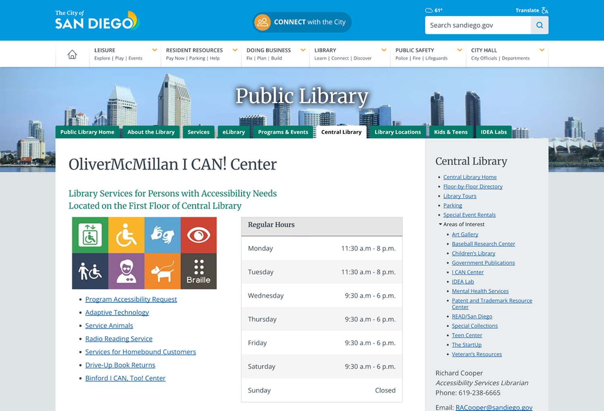
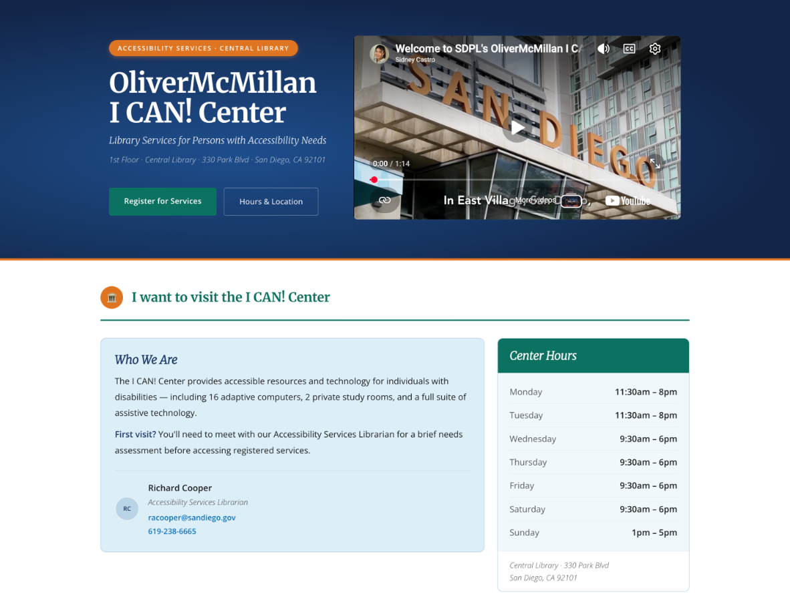

Adaptive technology — tools with plain-language descriptions

Homebound services — clear pathways for patrons who can't visit
Sole web contact for administrators across 40+ NYC DOE districts. Led kickoffs, shaped content and navigation around each school's audience, and reviewed every page for accuracy and accessibility before launch.
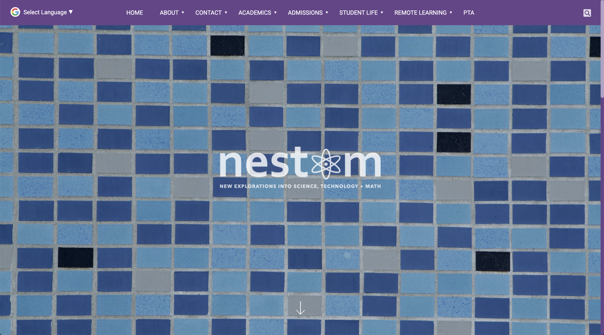
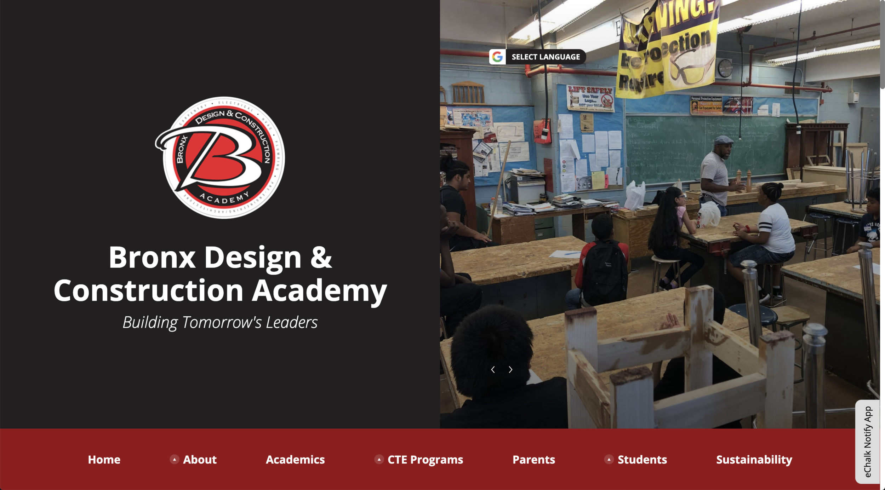
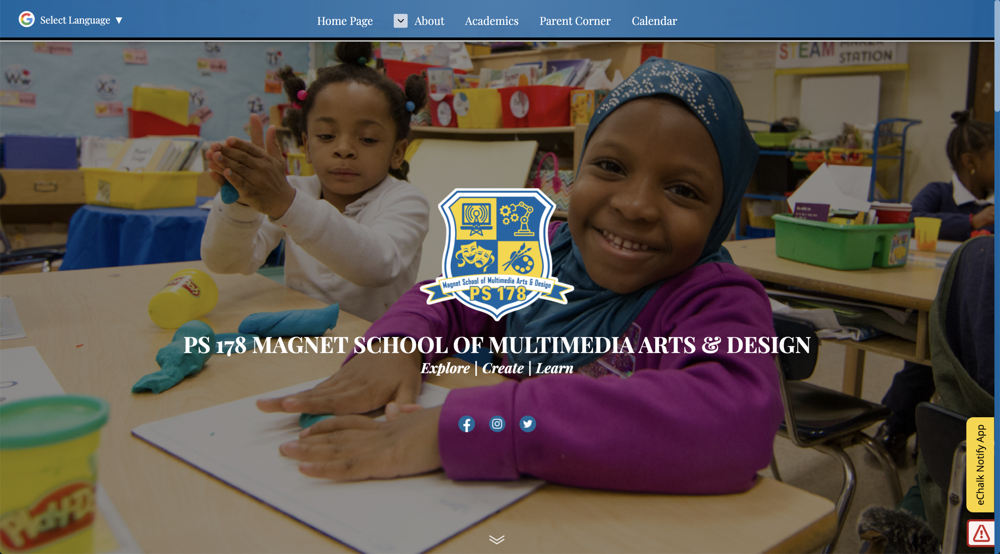
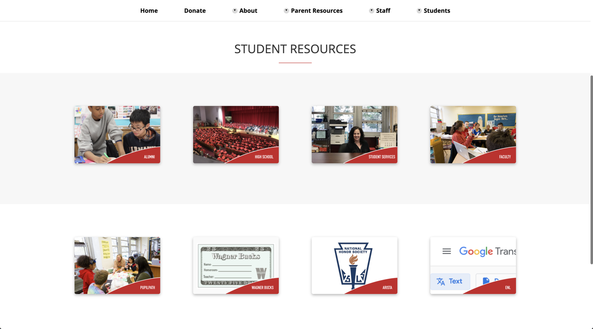
Wagner M.S. Student Resources
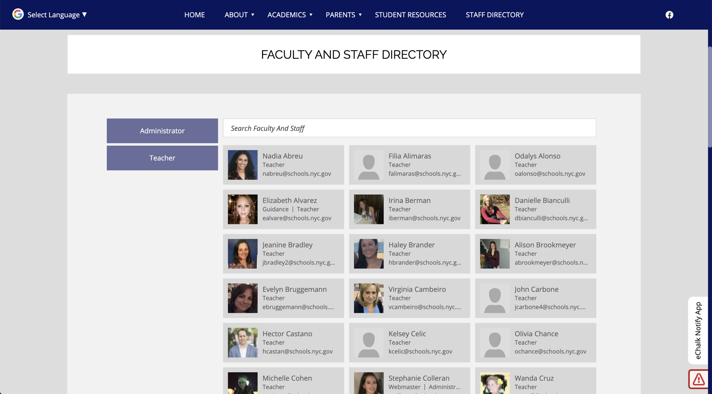
PS 150Q Staff Directory
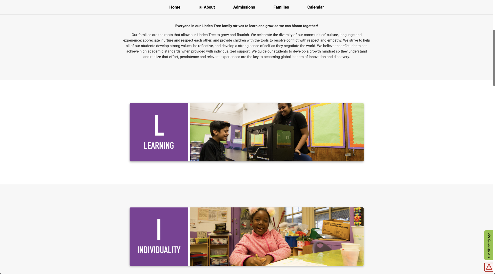
Linden Tree Elementary Values
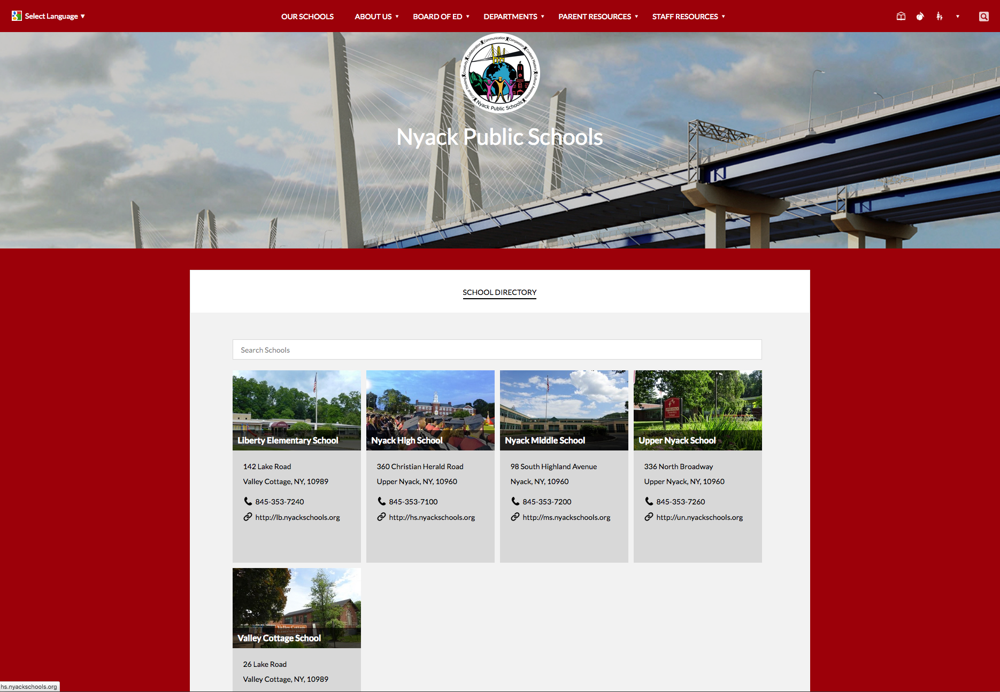
Nyack District Directory
HTML, CSS/SASS, and JavaScript — public school district sites built to spec and shipped WCAG 2.1 AA compliant.

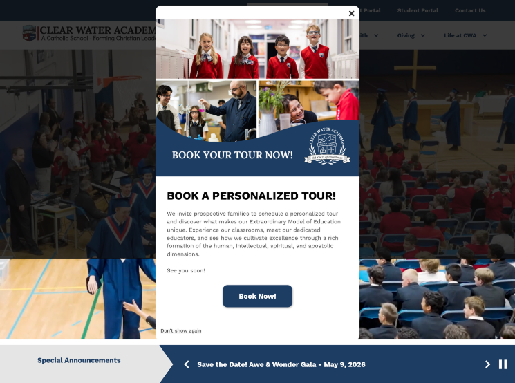

Holy Family

Elaine Wynn Elementary
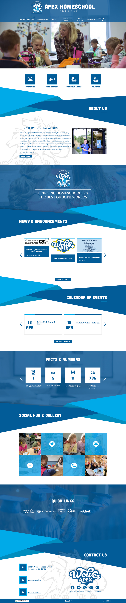
Apex Homeschool

Atlas Public Schools